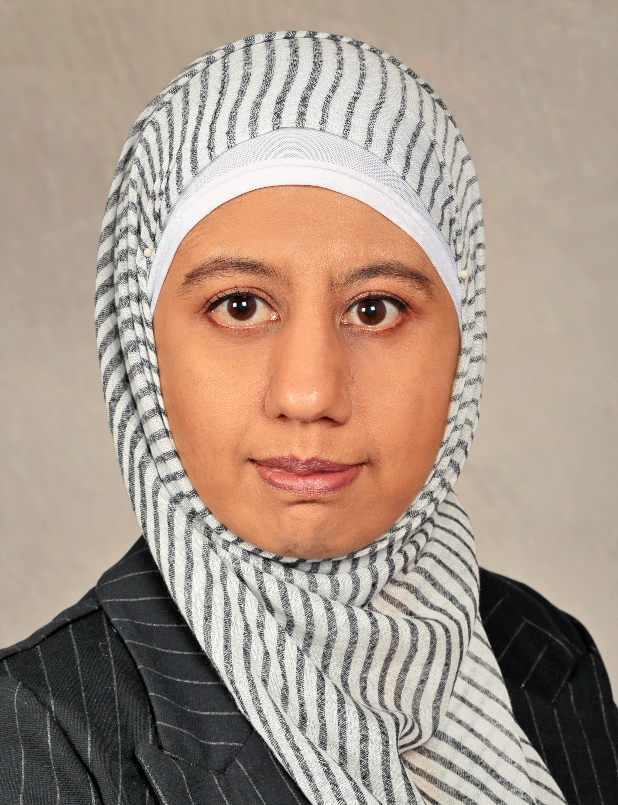

I am a senior researcher at the Institute of Biomedical Informatics (BI-K), University Hospital Cologne, where I work on the application of Artificial Intelligence for data-intensive problems in healthcare. My research focuses on data science and data management at scale, with particular emphasis on robust, reproducible, and FAIR-compliant handling of biomedical data. I develop scalable AI models and algorithms for data analytics and data stewardship, aiming to turn complex, heterogeneous data into reliable and actionable knowledge. Methodologically, my work integrates Knowledge Graphs, Natural Language Processing, and FAIR data principles, with a strong focus on practical applicability in clinical and research settings.
Previously, I was Team Leader for Big Data Analytics at the GESIS – Leibniz Institute for the Social Sciences, where I worked on large-scale data analytics and the development of the Methods Hub, focusing on reusable, scalable analytical workflows and tools for the social sciences. I also served as Group Leader for Distributed Semantic Analytics at the University of Bonn within the Smart Data Analytics (SDA) lab, and as a Data Science Expert at the University of Cologne within the CEPLAS cluster of excellence.
My research spans distributed analytics, data mining, semantic web technologies, and data FAIRification. I have contributed to multiple Horizon 2020–funded projects, designing and implementing scalable data and analytics architectures across domains including maritime systems, energy, food systems, social sciences, smart cities, and plant sciences. I hold a B.Ed. in teaching and have 10+ years of university-level teaching experience across BSc, MSc, and PhD programmes.
Email: hajira.jabeen[at]uk-koeln.de
Focusing on AI and ML methods applied to health data, developing scalable and reusable solutions for clinical use. Using LLMs (e.g., GLiNER, BERT) for de-identification, clinical code annotation, and data summarisation for clinicians; employing PostgreSQL and Grafana for data quality monitoring.
Led AI-driven metadata and research data management solutions aligned with FAIR principles. Collaborated with NFDI4DS and NFDI4Health on metadata standards and cross-domain interoperability. Delivered workshops, tutorials, and webinars on RDM across Clinical Research Centres. Provided strategic and technical leadership for clinician-facing services including the FAIRdata-Cologne Dataverse catalogue, FAIRSpace Cologne, and REDCap.
Led design and development of metadata-aware analytics services for large-scale social science datasets. Applied knowledge graphs and semantic data modelling to enable FAIR-compliant data access, integration, and reuse. Collaborated with national data infrastructure initiatives including NFDI4DS and NFDI(BERD). Contributed to the Methods Hub for reproducible and explainable analytics methods.
Led FAIR Data Management initiatives at CEPLAS, designing and implementing a comprehensive FDM solution in collaboration with the DataPlant consortium. Coordinated with multiple NFDI consortia. Organised workshops on Research Data Management and supported development of data management plans.
Head of the "Distributed Semantic Analytics" research group. Oversaw research in distributed analytics, knowledge graphs, and machine learning. Secured and managed multiple research grants; led teaching and organisational responsibilities.
Work package lead on the Horizon 2020–funded Big Data Europe project, developing a multi-purpose, open-source, and scalable platform for European research communities. Research in Description Logics, Structured Machine Learning, and Semantic Web with Apache Spark, Flink, and Docker.
Teaching (Software Architecture, Data Mining) and active membership in the GameAI and REAL research groups. Work on Monte Carlo Tree Search, procedural game development, and evolutionary algorithms.
Worked in a team project on an accelerated global team-building software solution.
Head of the Computing and Technology department (20+ staff, ~2,000 students). Led departmental accreditation, curriculum development, and hiring. Taught undergraduate, graduate, and PhD courses with consistently outstanding evaluations. First female PhD graduate from NU-FAST, 2010.
| Project | Source | Amount |
|---|---|---|
| TIER2 | EU Horizon | €162,500 |
| PLATOON | EU H2020 | €507,500 |
| LAMBDA | EU H2020 | €181,718 |
| Cleopatra | EU H2020 | €377,989 |
| Bio2Vec | CRG / KAUST | €80,000 |
| Smoothed Analysis of ML Algorithms | Hochschulpakt (HSP) | €70,000 |
| CSCUBS Conference | Internal | €21,000 |
| Total | €1,400,706 | |